About Me
About Me

|
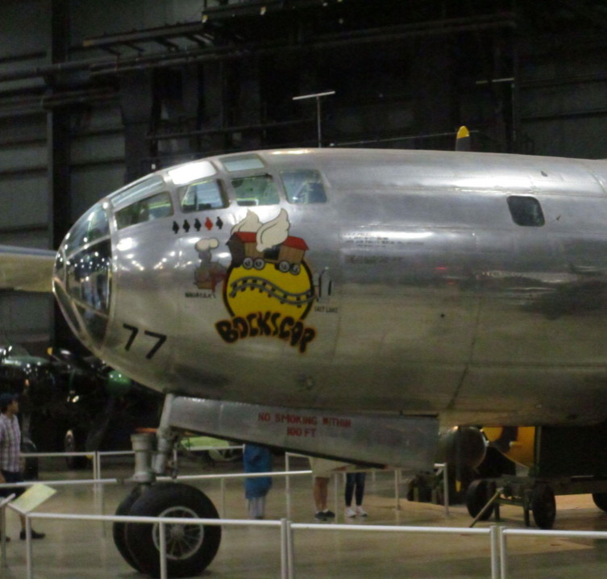 This is a photograph of the nose of a B-29 Superfortress Bomber as it sits in the National Museum of the USAF, in Dayton OH |
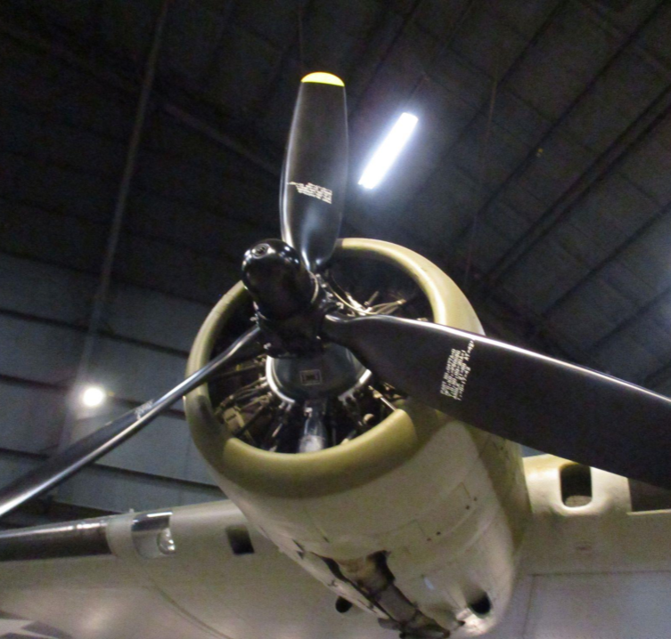 This is a photograph of the propeller of a B-17 Flying Fortress Bomber as seen in the National Museum of the USAF, in Dayton OH |
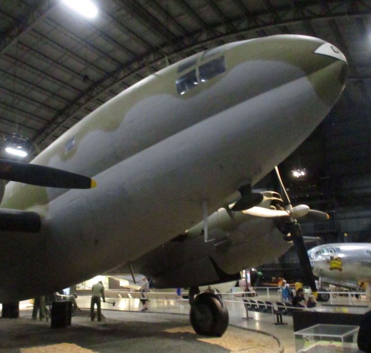 This is a photograph of the nose of a Curtiss C-46 Commando troop transport as it sits in the National Museum of the USAF, in Dayton OH |
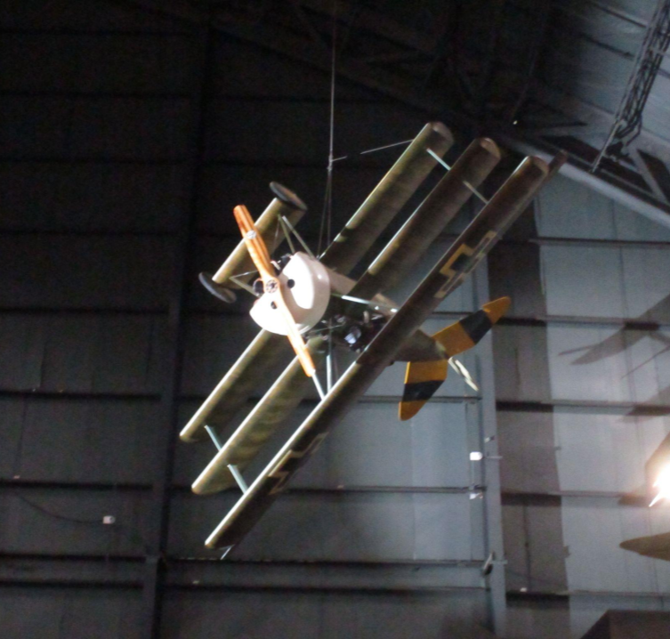 This is a photograph of an unidentified WWI biplane, strung from the ceiling of the National Museum of the USAF |

|
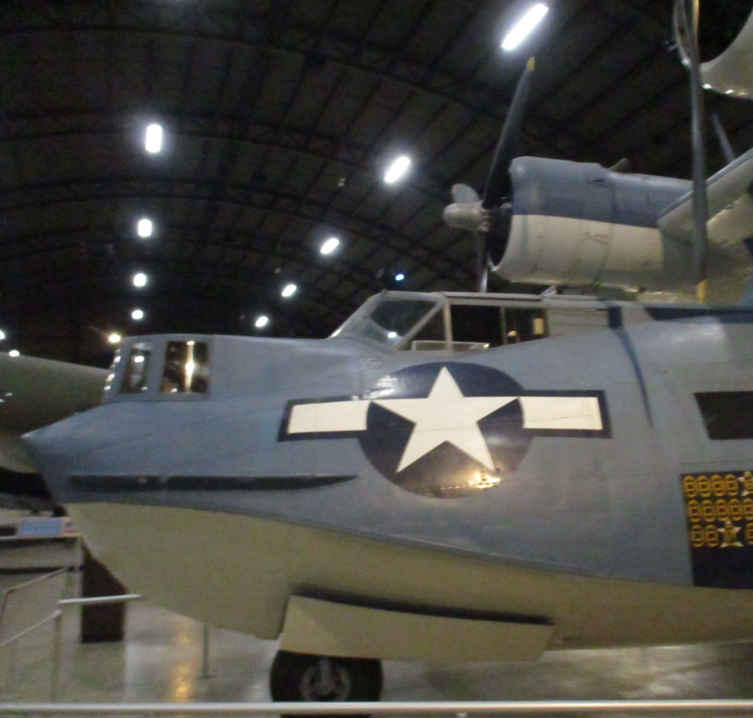 This is a photograph of the nose of the PBY Catalina Patrol Flying Boat, located in the National Museum of the USAF, in Dayton OH |
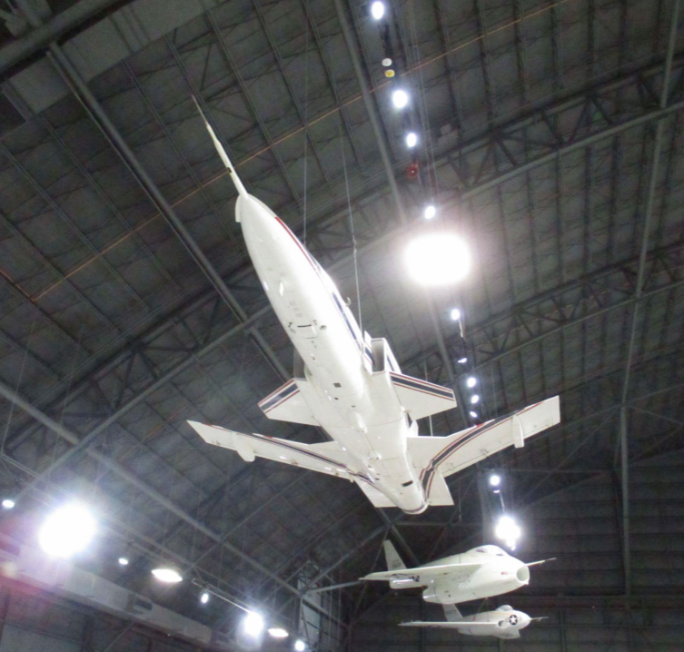 This is a photograph of the X-29, an experimental reverse-swept wing fighter jet, located in the National Museum of the USAF, in Dayton OH |
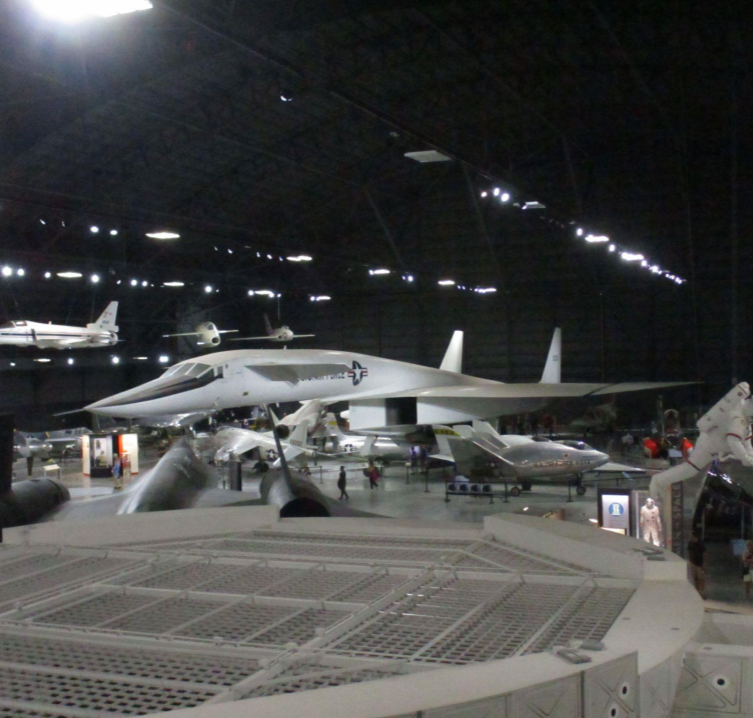 This is a photograph of the sole remaining XB-70 high speed bomber, the only bomber ever to do Mach 3, located in the National Museum of the USAF |
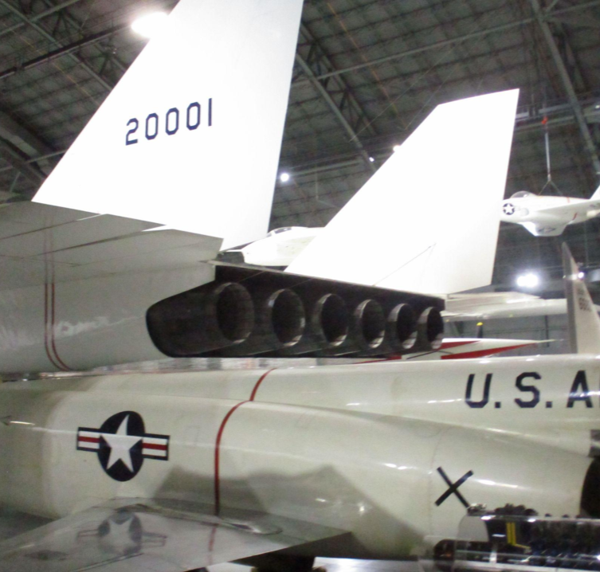 This is a photograph of the six engine exhaust nozzles of the XB-70 bomber, located in the National Museum of the USAF |
|
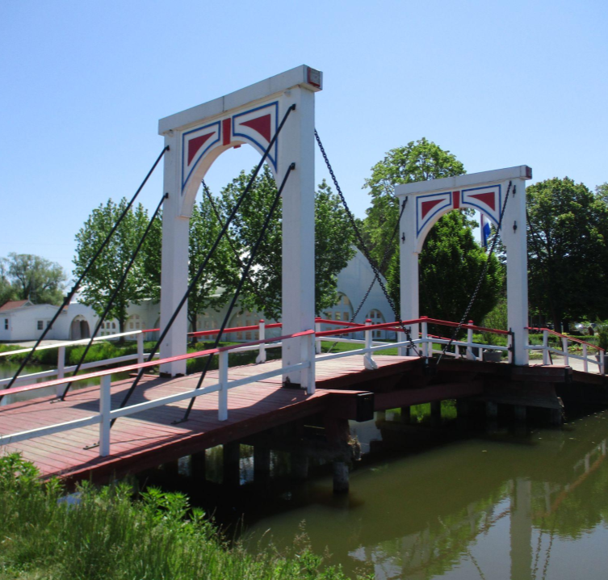 This is a photograph of the white bridge that |
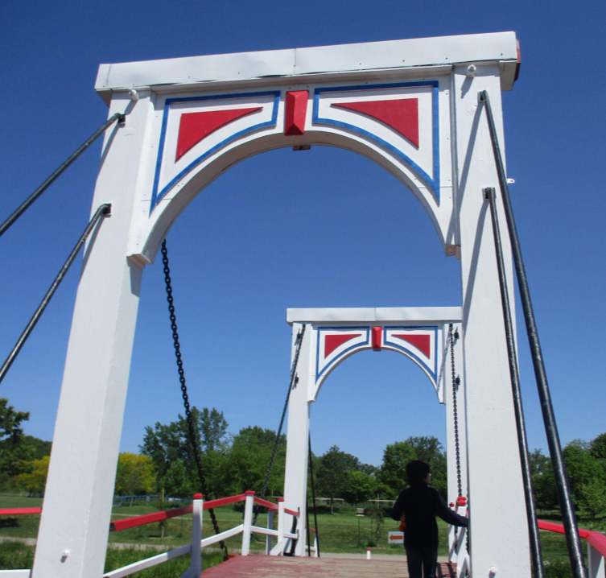 This is a photograph of the arch of |
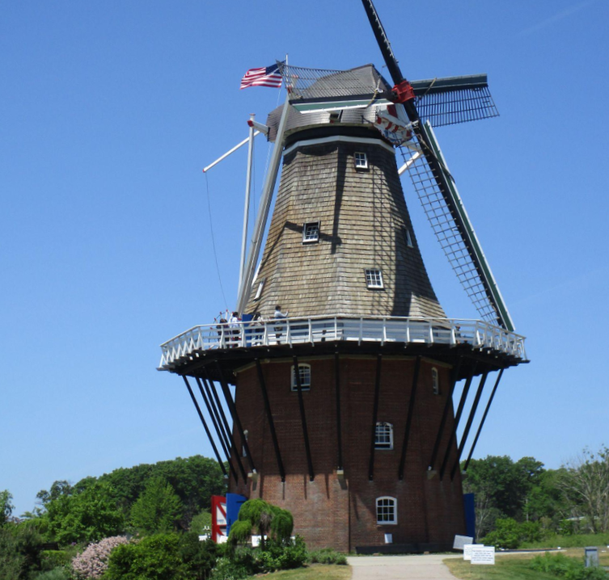 This is a full size photograph of the |
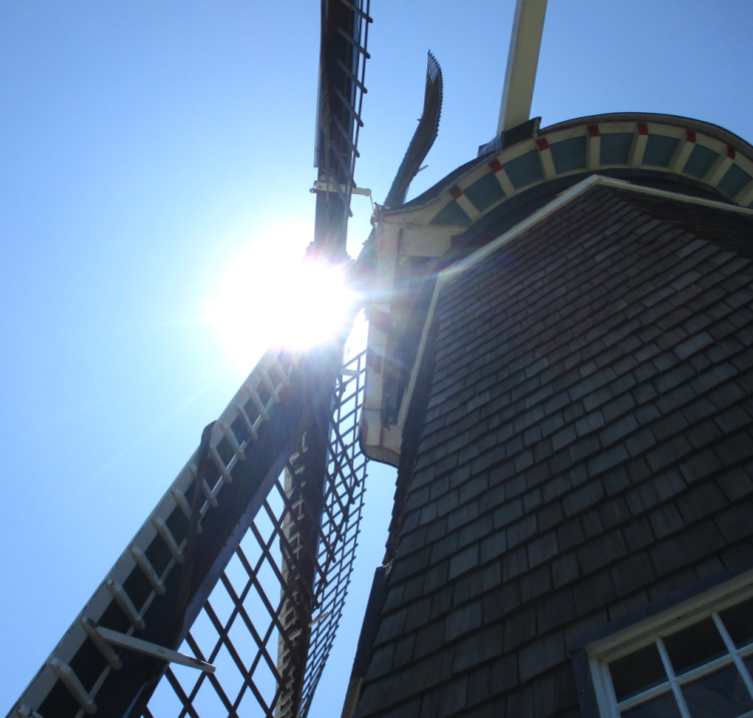 This is a photograph of a sun flare |
|
This is a photograph of a red flower in the Longwood Gardens Conservatory, PA |
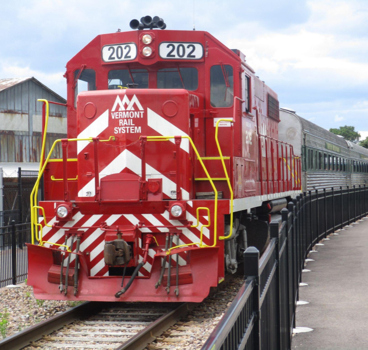 This is a photograph of a red locomotive as it pulls into the station, Burlington, VT |
This is a slow-shutter-speed photograph taken of a sparkler being moved in an infinity sign |
This is a photograph of the facade of John the Baptist's Cathedral in Savannah, Georgia |